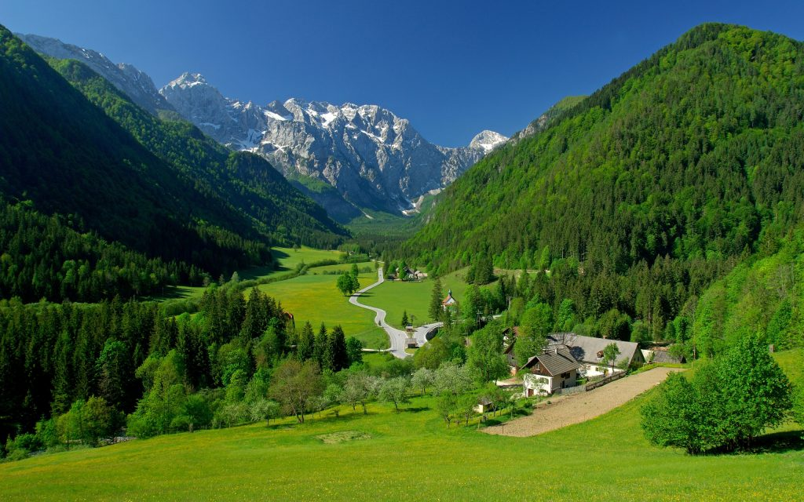

Featured Photos


Binsar is a serene hill station located in the Kumaon region of the Indian state of Uttarakhand. Situated at an altitude of approximately 2,400 meters (7,874 feet) above sea level, Binsar offers breathtaking views of the majestic Himalayan peaks, including Nanda Devi, Trishul, and Panchachuli. The region is renowned for its pristine natural beauty, dense forests, and diverse wildlife, making it an ideal destination for nature lovers, photographers, and adventure enthusiasts. Binsar Wildlife Sanctuary, spread over an area of 47.79 square kilometers, is home to a variety of flora and fauna, including oak, rhododendron, pine, leopard, Himalayan black bear, and more. Visitors to Binsar can explore numerous trekking trails, birdwatching spots, and ancient temples, such as the Binsar Mahadev Temple and Jageshwar Temple Complex. With its tranquil ambiance and captivating landscapes, Binsar offers a perfect retreat for those seeking solace and rejuvenation amidst nature's splendor.